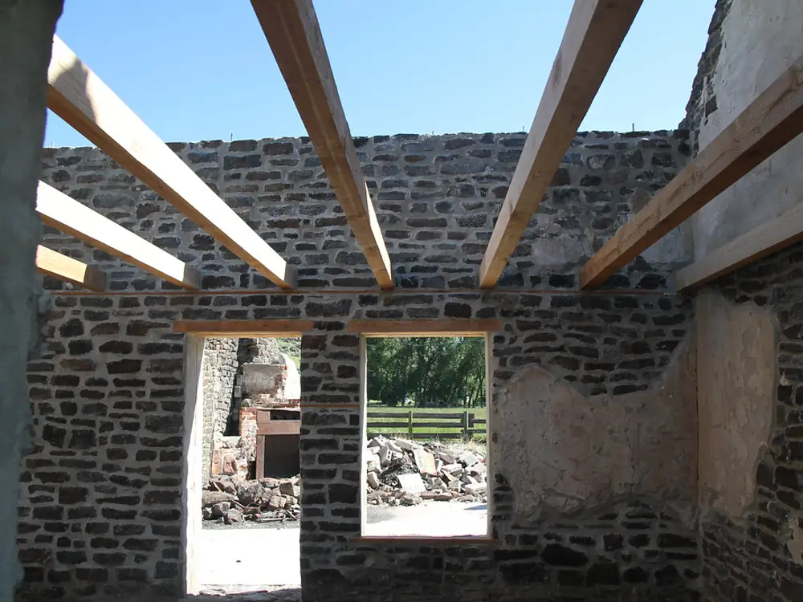

About
Old houses, honest answers.
A small team that would rather fix a gutter than sell you a treatment you don't need.
Ruth Pennington Sample spent years plastering old stone houses around Lancaster and kept seeing the same thing: walls injected for rising damp that were really suffering from a blocked gutter or a flower bed piled against them.
She started Lunebrook to do it the other way round: survey first, find the cause, then fix only what needs fixing Sample. The name comes from the little brook that ran past her first yard on the way to the Lune Sample.

Stock photoStock photo, not our work.
The team
Who you'll meet Sample
These people are made up for this demo.
Ruth Pennington Sample
Founder and surveyor. Will tell you if it's just the gutter.
Sam Tattersall Sample
Timber and floors. Happiest under a suspended floor with a torch.
Imran Hale Sample
Plastering and finishing. Lime, breathable finishes, tidy edges.
How we work
Four rules.
Cause first
We find what's causing the damp before we talk about treatments.
Plain English
No jargon walls. If we use a technical word, we explain it.
Only what's needed
If the simple fix will do, we say so.
In writing
Every survey gets a written report with photos.
Want an honest look at your damp?
Book a survey.